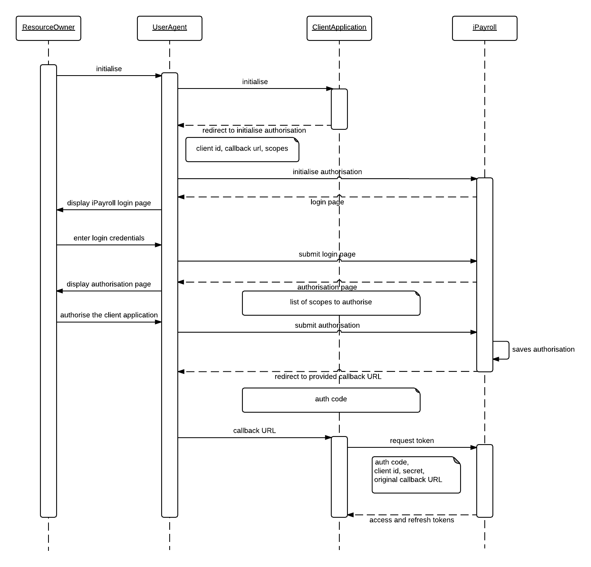
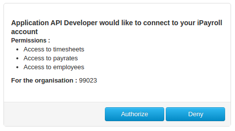

Authorisation |
|
|
iPayroll uses OAUTH2 Authorisation Code Grant. A user with the role of paymaster is required to authorise an external application to access their organisation in iPayroll via the API. The following sequence diagram illustrates how the authorisation process works:  |
|
Request PermissionBefore a third party application can make any API call, it needs the permission of a resource owner. Depending on types of data that the application is planning to access, it may request permission to access one or more scopes. This is achieved by redirecting the browser that initiated the request (UserAgent) to iPayroll's authorisation endpoint.
https://<SERVER-DOMAIN>/oauth/authorize?response_type=code&client_id=<CLIENT_ID> &scope=<LIST_OF_SCOPES>&redirect_uri=<CALLBACK_URL>&state=<STATE> Response type should always be code. It is an OAuth 2 specific parameter. Client id is the unique identification of your application. List of scopes that the application needs the resource owner to grant permission to. If multiple scopes are specified, separate them by a space. Redirect URI is used for returning the control back (callback) to the application once authentication process completes. State is an optional parameter that can be used to maintain a state, and is a reference to the request instance. The value passed would be returned back to the redirect URI when the callback is made. |
|
AuthorisationThe resource owner is required to authenticate itself to iPayroll in order to grant permission to an application. Therefore, https://<SERVER-DOMAIN>/oauth/authorize is a protected endpoint. If the resource owner is not already logged in, iPayroll would redirect the user agent to the standard login page. But if already logged in, this step is skipped. Once successfully authenticated, the following page is displayed asking for the resource owner's permission to grant access. If the resource owner grants permission, the client application is notified via the callback URI. |
|
Authorisation CodeOnce resource owner's permission is granted, the redirect URI of the application is called passing authorisation code as a parameter:
https://<SERVER-DOMAIN>/oauth/authorize?response_type=code&client_id=<CLIENT_ID> &scope=<LIST_OF_SCOPES>&redirect_uri=<CALLBACK_URL>&state=<STATE> The request would also contain state, with the value originally passed on when making the authorisation request. As HTTP redirect is used for making the callback, the redirect URI does not have to be a globally accessible one. |
|
Re-authorisationWhen a resource owner authorises an application, it is valid forever, unless the resource owner manually revokes the grant. Therefore, ideally, an application would only have to request for permission once. However, if an application would want to request for scopes that are not already permitted, it could initialise another authentication request any time. |
|
Request TokensOnce the application receives the authentication code, it should request for tokens that could be used for making subsequent API calls by making the following HTTP POST request: Request type: POST URL: https://<SERVER-DOMAIN>/oauth/token Parameters: grant_type=authorization_code client_id=<CLIENT_ID_OF_THE_APPLICATION> client_secret=<CLIENT_SECRET> code=<AUTH_CODE_RECEIVED> redirect_uri=<CALLBACK_URL_USED_FOR_THE_AUTH_REQUEST> Grant type is an OAuth 2 specific parameter and it should always be set to authorization_code. Client id and client secret are application specific properties and they are used for authenticating the application to iPayroll. Code is the authentication code received in the callback. This identifies a particular authentication that is being made by a resource owner. Redirect URI is the same URI that was passed when making the authorisation call. It is passed on for verification purposes and part of OAuth 2 specification. If successful, the server would respond with the following:
{
"access_token":"<ACCESS_TOKEN>",
"token_type":"bearer",
"refresh_token":"<REFRESH_TOKEN>",
"expires_in":<NUMBER_OF_SECONDS_THE_ACCESS_TOKEN_EXPIRES_IN>,
"scope":"<LIST_OF_SCOPES_AUTHORISED>"
}
Once an application acquires tokens by passing an authorisation code, that code would be deleted. Subsequent calls with the same authorisation code would not return tokens. Therefore, it is client application's responsibility to hold onto tokens. |
|
Access Token ExpiryThe received access token can be used for making API calls till it expires. The system will return the following error when it expires:
{
"error": "invalid_token",
"error_description": "Invalid access token: <ACCESS_TOKEN>"
}
The following request can be made to get a new access token using the refresh token: Request type: POST URL: https://<SERVER-DOMAIN>/oauth/token Parameters: grant_type=refresh_token client_id=<CLIENT_ID_OF_THE_APPLICATION> client_secret=<CLIENT_SECRET> refresh_token=<REFRESH_TOKEN> The server would reply with the same response as the request tokens method. |
|
Refresh Token ExpiryBy default, refresh token is valid for 10 years. The value can be further increased if required. However, if the validity period of the refresh tokens is decreased, the application should handle expired refresh tokens. When a new access token is requested passing a refresh token, server would reply back with the following error message if the refresh token is expired:
{
"error": "invalid_token",
"error_description": "Invalid refresh token (expired): <REFRESH_TOKEN>"
}
The client application should initiate a request tokens method to get a new refresh token. As this method expects a new authorisation code, the client application should first initiate a request permission call to get an authorisation code. Since a resource owner has already authorised the application, the grant permission page would be bypassed in this scenario. |